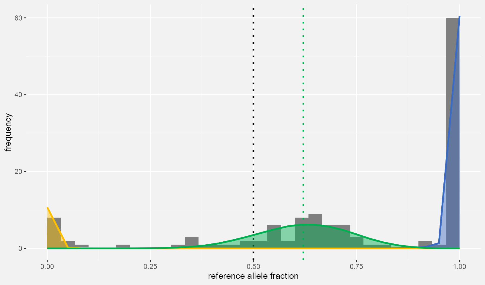

maelstRom_Allelic_Dispersion_tutorial.RmdWelcome to the tutorial vignette of the Modeller of Allele-Specific Transcriptomics, maelstRom! This R package offers extensive likelihood-based modelling of Allele-Specific Expression (ASE) phenomena, which includes statistical tests for their detection (e.g. genome-wide cis-eqtl mapping) or differential occurrence (e.g. copy-number alterations and/or hypermethylated loci in diseases such as cancer). All of these functionalities rely solely on regular RNAseq data, without the requirement of additional experiments such as genotyping, nor specialized data-types such as paired RNAseq.
This vignette is a step-by-step guide for a basic ASE-analysis using maelstRom starting from raw allelic counts, from input pre-processing up until vizualization of final results. For instructions on installing maelstRom, please consult maelstRom’s github home page at https://biobix.github.io/maelstRom/.
maelstRom relies on per-locus per-sample nucleotide counts (A/T/C/G), relying on single-nucleotide polymorphisms (SNPs) to differentiate between alleles. Such counts are easily obtained from RNAseq BAM or SAM files, either by custom scripting or extisting functionalities such as SAMtool’s mpileup, or GATK’s CollectAllelicCounts (https://gatk.broadinstitute.org/hc/en-us/articles/360037594071-CollectAllelicCounts); the latter already filters these nucleotide counts down to just one reference- and variant-allele.
A toy data example of such input data is included in maelstRom, and is used throughout the remainder of this vignette. This toy data consists of both a hypothetical control (healthy) and case (diseased) dataset:
library(maelstRom)
#> Package 'maelstRom' version 1.1.11| Gene | Locus | Sample | ref_alleles | A | T | C | G | |
|---|---|---|---|---|---|---|---|---|
| 5295 | Gene1 | Locus1 | Sample1 | G/A/C | 63 | 0 | 0 | 74 |
| 5296 | Gene1 | Locus1 | Sample2 | G/A/C | 214 | 0 | 0 | 0 |
| 5297 | Gene1 | Locus1 | Sample3 | G/A/C | 249 | 0 | 0 | 0 |
| 5298 | Gene1 | Locus1 | Sample4 | G/A/C | 54 | 0 | 0 | 62 |
| 5299 | Gene1 | Locus1 | Sample5 | G/A/C | 80 | 0 | 0 | 87 |
| 5300 | Gene1 | Locus1 | Sample6 | G/A/C | 57 | 0 | 1 | 41 |
| Gene | Locus | Sample | ref_alleles | A | T | C | G | |
|---|---|---|---|---|---|---|---|---|
| 11070 | Gene1 | Locus1 | Sample129 | G/A/C | 194 | 0 | 0 | 321 |
| 11071 | Gene1 | Locus1 | Sample130 | G/A/C | 74 | 0 | 0 | 62 |
| 11072 | Gene1 | Locus1 | Sample131 | G/A/C | 62 | 0 | 0 | 49 |
| 11073 | Gene1 | Locus1 | Sample132 | G/A/C | 333 | 0 | 0 | 1 |
| 11074 | Gene1 | Locus1 | Sample133 | G/A/C | 226 | 1 | 0 | 137 |
| 11075 | Gene1 | Locus1 | Sample134 | G/A/C | 171 | 0 | 0 | 0 |
This toy data contains nucleotide counts spanning 200 SNP loci across 71 genes (a gene can contain multiple SNP loci), covered by 128 control- and 268 case-samples:
[1] 71
[1] 200
[1] 128
[1] 268
The nucleotide counts above are formated as one giant dataframe. In order to use them as a maelstRom input, these need to be split into a list of seperate dataframes per locus, as maelstRoms models ASE on a per-locus level. In general, every maelstRom function has its own help page detailing the expected format of its input.
# maelstRom expects lists:
controlList <- list()
caseList <- list()
for(LOC in unique(ControlCountsToy$Locus)){ # For every locus...
interDF <- ControlCountsToy[ControlCountsToy$Locus==LOC,] # extract nucleotide counts,
controlList[[LOC]] <- interDF # and put it into the list
}
for(LOC in unique(CaseCountsToy$Locus)){ # Do the same for case data
interDF <- CaseCountsToy[CaseCountsToy$Locus==LOC,]
caseList[[LOC]] <- interDF
}maelstRom’s models are built on the beta-binomial distrubution. As the name implies, this distribution models repeated observations of a binary outcome and is thus limited to two possible alleles per locus. While this may seem overly restrictive, it’s rather commonplace for SNPs in human populations to exhibit, at most, two commonly occurring SNP variants. But in the case that three or even four SNP variants should be considered, pairwise maelstRom fits of said variants are an option; beta-multinomial models, which could model all possible variants at once, are not a feature of the current version of maelstRom due to their limited added value in practical research comparative to the complexity of their implementation.
standard_alleles() takes our list of per-locus
dataframes as an input, and picks the most- and second-most occurring
nucleotide (at population-level) as reference- and variant nucleotide
respectively, adding the resulting choice and the corresponding
reference- and variant-count to each individual dataframe. If a
“ref_allele” column is provided in these dataframes (as is the case for
our toy data), standard_alleles() will only consider the
nucleotides listed therein as possible reference- or variant candidates.
This can be used to e.g. integrate expert knowledge about the current
population (it is known only the listed nucleotides should occur at a
certain location, and anything else is some sort of artefact), or limit
all further analyses to certain alleles of particular interest.
for(n in names(controlList)){
controlList[[n]] <- maelstRom::standard_alleles(controlList[[n]])
}
knitr::kable(head(controlList[["Locus10"]]))| Gene | Locus | Sample | ref_alleles | A | T | C | G | ref | var | ref_count | var_count | |
|---|---|---|---|---|---|---|---|---|---|---|---|---|
| 6254 | Gene4 | Locus10 | Sample1 | C/T | 0 | 113 | 176 | 1 | C | T | 176 | 113 |
| 6255 | Gene4 | Locus10 | Sample2 | C/T | 4 | 0 | 630 | 1 | C | T | 630 | 0 |
| 6256 | Gene4 | Locus10 | Sample3 | C/T | 0 | 202 | 273 | 3 | C | T | 273 | 202 |
| 6257 | Gene4 | Locus10 | Sample4 | C/T | 0 | 0 | 381 | 1 | C | T | 381 | 0 |
| 6258 | Gene4 | Locus10 | Sample5 | C/T | 0 | 0 | 683 | 0 | C | T | 683 | 0 |
| 6259 | Gene4 | Locus10 | Sample6 | C/T | 0 | 0 | 418 | 2 | C | T | 418 | 0 |
While standard_alleles() could be run seperately on the
case data, it makes sense (from both a data-analytical and biological
viewpoint) to pick the same reference- and variant nucleotide as the
control data:
for(n in names(caseList)){
interDF <- caseList[[n]]
interDF$ref_alleles <- controlList[[n]]$ref_alleles[1]
interDF$ref <- controlList[[n]]$ref[1]
interDF$var <- controlList[[n]]$var[1]
interDF$ref_count <- interDF[,which(colnames(interDF)==interDF$ref[1])]
interDF$var_count <- interDF[,which(colnames(interDF)==interDF$var[1])]
caseList[[n]] <- interDF
}
knitr::kable(head(caseList[["Locus10"]]))| Gene | Locus | Sample | ref_alleles | A | T | C | G | ref | var | ref_count | var_count | |
|---|---|---|---|---|---|---|---|---|---|---|---|---|
| 13114 | Gene4 | Locus10 | Sample129 | C/T | 0 | 4 | 457 | 0 | C | T | 457 | 4 |
| 13115 | Gene4 | Locus10 | Sample130 | C/T | 0 | 0 | 382 | 0 | C | T | 382 | 0 |
| 13116 | Gene4 | Locus10 | Sample131 | C/T | 0 | 111 | 177 | 0 | C | T | 177 | 111 |
| 13117 | Gene4 | Locus10 | Sample132 | C/T | 0 | 0 | 547 | 0 | C | T | 547 | 0 |
| 13118 | Gene4 | Locus10 | Sample133 | C/T | 0 | 1 | 332 | 1 | C | T | 332 | 1 |
| 13119 | Gene4 | Locus10 | Sample134 | C/T | 0 | 33 | 88 | 0 | C | T | 88 | 33 |
Some rudimentary prior filtering is always worth considering, as it
avoids wasting time on trying to fit models on inherently low-quality
data. maelstRom’s prior_filter() provides various filtering
options (see its help page; minimal median coverage across a locus,
minimal number of samples, minimal minor allele count frequency i.e. the
% abundance of the variant allele over all RNAseq counts, etc.). For
this tutorial, we use a mild prior filter, simply requiring at least 20
control samples for a locus to be retained. We perform no prior
filtering on the case data itself, but do remove loci that were removed
in the control-data, as the main use of the case-data is differential
ASE when compared to controls.
This 20-control-sample requirement removes 5 loci, corresponding to two genes, from the toy dataset:
for(n in names(controlList)){
controlList[[n]] <- maelstRom::prior_filter(controlList[[n]], min_median_cov = 0,
min_nr_samples = 20, checkref_filter = FALSE, prior_allelefreq_filter = FALSE,
min_PriorAlleleFreq = 0)
if(is.null(controlList[[n]])){
# Filter out case data if corresponding control data was removed:
caseList[[n]] <- NULL
}
}
# These loci were filtered out:
cat(paste0(setdiff(unique(ControlCountsToy$Locus), names(controlList)), ",")) Locus30, Locus31, Locus187, Locus188, Locus189,
maelstRom can run for quite some time on larger datasets (especially
when applied genome-wide), so this tutorial illustrates (optional)
parallelization using R’s parallel package. This package
allows the use of multiple cores for maelstRom’s computations, at least
on Linux (on e.g. a local windows installation, it only allows for one
core). While the number of cores NC is kept to 1 in the
code below, picking a higher number should allow for a proportionate
speed-up.
The following code chunk splits maelstRom’s input into a list of
NC elements, which is required for parallelization using
the parallel package.
NC <- 1 # Number of Cores, CHANGE THIS for a speed-up when working on a linux machine
NS <- length(controlList)
spl <- c(0, cumsum(rep(floor(NS/NC),NC)+c(rep(1,NS-floor(NS/NC)*NC),
rep(0,NC-NS+floor(NS/NC)*NC))))
ParCTRL <- vector(mode = "list", length=NC)
for(i in 1:NC){ # Put the split input data into a list for parallellisation
ParCTRL[[i]] <- controlList[(spl[i]+1):(spl[i+1])]
}
ParCASE <- vector(mode = "list", length=NC)
for(i in 1:NC){ # Put the split input data into a list for parallellisation
ParCASE[[i]] <- caseList[(spl[i]+1):(spl[i+1])]
}maelstRom’s ASE models rely on two population-wide (constant)
metaparameters: the inbreeding coefficient F of the
population under study, and the sequencing error rate SE
controlling the occurrence “faulty” nuceotide counts in homozygous
individuals (i.e. counts of the allele for which they are not
homozygous). These can very well be set at values based on expert
knowledge (e.g. most natural populations should be approcimately
panmictic, i.e. exhibit an inbreeding coefficient of zero) and/or the
used sequencing technogy’s and alignment algorithm’s propensity to
report faulty nucleotides.
Nevertheless, maelstRom has a functionality to quickly and robustly estimate these parameters from the supplied data, which can be used in the abscence of prior knowledge or, even should it be available, is a safe option anyway (as both a sanity check, or to incorporate error sources and data biases which were possibly overlooked in a would-be prior estimate). This happens by fitting the following extremely basic binomial mixture model on the supplied control data:
\[ \small \begin{aligned} \mathrm{PMF}(counts_{ref}|counts_{total}) = &\ \phi_{rr} * {\tt pbinom}(x=counts_{ref} \ |\ n=counts_{total}, p=1-SE) \ + \\ &\ \phi_{rv} * {\tt pbinom}(x=counts_{ref} \ |\ n=counts_{total}, p=0.5) \ + \\ &\ \phi_{vv} * {\tt pbinom}(x=counts_{ref} \ |\ n=counts_{total}, p=SE) \\ \end{aligned} \]
With \((\phi_{rr}, \phi_{rv}, \phi_{vv})\) to-be-fitted genotype frequencies from which the inbreeding coefficient can be estimated, and SE the sequencing error rate estimate. This model does not incorporate any ASE at all (perfectly 50-50 allelic expression in the heterozygous peak, no variance beyond technical binomial sampling variance allowed) but should be sufficient to produce robuts, median-based metaparameter estimates so long as it fits a large portion of the supplied data somewhat reasonably.
The following code chunk uses AllelicMeta_est_par() to
produce the wanted estimates, and to check for the aforementioned
“reasonable fit” only includes control loci with at least 20 available
samples, having a median coverage of at least 4 across these samples,
not returning an estimated SE over 0.035 (as this is unreasonably high
and most likely indicates low-quality data or a failed model fit) and
having an estimated minor allele frequency of at least 0.15 based on the
above mixture model fit (anything lowes implies a rather low occurrence
of at least one of the possible genotypes, and so less reliable
estimates of the population’s metaparameters):
cl <- parallel::makeCluster(getOption("cl.cores", NC))
GenoFinData <- parallel::parLapply(cl, X = ParCTRL, fun = maelstRom::AllelicMeta_est_par,
# Filter criteria mentioned in the text above:
MinAllele_filt = 0.15, SE_filt = 0.035, NumSamp_filt = 20, MedianCov_filt = 4)
parallel::stopCluster(cl)
# Extract metaparameter estimates from the parallelly-produced output:
SE_vec <- do.call(c, lapply(GenoFinData, `[[`, 2))
F_vec <- do.call(c, lapply(GenoFinData, `[[`, 3))
SEmedian <- median(SE_vec)
Fmedian <- median(F_vec)
#estimates of resp. sequencing error rate and inbreeding coefficient:
cat(paste0(c(SEmedian, Fmedian), ",")) 0.00248190279214063, 0.00872807570598289,
These metaparameter estimates seem reasonable. Please note that an extremely low sequencing error metaparameter would make fitting of homozygous peaks later down the pipeline way too strict, failing to accomodate for even a single faulty read. As such, setting SE below 0.002 is not recommended. An inbreeding coefficient close to zero is a sign of a panmictic population and commonplace when working on human data, but it could be more extreme in specialized experimental setups.
maelstRom’s main functionality models allele-specific counts as a beta-binomial mixture of three possible genotypes. This allows for both Allelic Bias (AB), i.e. unequal allelic expression in heterozygotes, via its \(\pi\)-parameter (beta-binomial mean); and Allelic Dispersion (AD), i.e. the population-level variability in allelic expression, via its \(\theta_{het}\)-parameter (beta-binomial overdispersion):
\[ \small \begin{aligned} \mathrm{PMF}(counts_{ref}|counts_{total}) = &\ \phi_{rr} * {\tt pBetaBinom}(x=counts_{ref} \ |\ n=counts_{total}, \pi=1-SE, \theta=\theta_{hom}) \ + \\ &\ \phi_{rv} * {\tt pBetaBinom}(x=counts_{ref} \ |\ n=counts_{total}, \pi=\pi_{het}, \theta=\theta_{het}) \ + \\ &\ \phi_{vv} * {\tt pBetaBinom}(x=counts_{ref} \ |\ n=counts_{total}, \pi=SE, \theta=\theta_{hom}) \\ \end{aligned} \]
With the remaining parameters being: \((\phi_{rr}, \phi_{rv}, \phi_{vv})\) the fitted genotype frequencies, and \(\theta_{hom}\) the beta-binomial overdispersion parameter in homozygotes. By fitting the former through expectation-maximization, which iteratively assigns each sample to the three possible genotypes, then estimates all genotype-specific beta-binomial parameters, maelstRom does not require additional genotyping-data.
The code chunk below uses the EMfit_betabinom_robust
function to fit this mixture model, and writes the results to
ASEfit_res. Additionally, it uses the previously calculated
inbreeding coefficient Fmedian to test every locus for
significant deviation from Hardy-Weinberg Equilibrium (HWE), which could
indicate a failed model fit and can thus be used as a goodness-of-fit
filter criterion later:
ASEfitter <- function(data){
positions <- names(data)
results <- data.frame()
for (z in positions) {
maelstRomres <- maelstRom::EMfit_betabinom_robust(data_counts = data[[z]],
SE = SEmedian, inbr = Fmedian)
data[[z]] <- maelstRomres$data_hash
res_loc <- data.frame("Gene" = data[[z]]$Gene[1] ,"Locus" = z,
"reference" = data[[z]]$ref[1], "variant" = data[[z]]$var[1],
"phi_rr" = maelstRomres$rho_rr, "phi_rv" = maelstRomres$rho_rv,
"phi_vv" = maelstRomres$rho_vv, "pi" = as.numeric(maelstRomres$AB),
"AB_pval" = as.numeric(maelstRomres$AB_p), "theta_hom" = maelstRomres$theta_hom,
"theta_het" = maelstRomres$theta_het, "allele.frequency" = data[[z]]$allelefreq[1],
"coverage" = median(data[[z]]$ref_count+data[[z]]$var_count),
"nr_samples" = nrow(data[[z]]),
"quality" = maelstRomres$quality,
stringsAsFactors = FALSE)
results <- rbind(results, res_loc) # results; one position per line
}
results <- maelstRom::HWE_chisquared(data = data, Fmedian, results = results)
results$HWEpval[is.na(results$HWEpval)] <- -1
results$HWE_TestStat[is.na(results$HWE_TestStat)] <- -1
return(list(data, results))
}
cl <- parallel::makeCluster(getOption("cl.cores", NC))
parallel::clusterExport(cl, c("Fmedian", "SEmedian"))
ASEfit <- parallel::parLapply(cl, X = ParCTRL, fun = ASEfitter)
parallel::stopCluster(cl)
ParCTRL <- lapply(ASEfit, `[[`, 1)
controlList <- do.call(c, lapply(ASEfit, `[[`, 1))
ASEfit_res <- do.call("rbind", lapply(ASEfit, `[[`, 2))ASEfit_res contains all per-locus parameters of the
beta-binomial mixture model discussed above. Also, besides the just
mentioned results of the chi square test for deviation from HWE, it
contains additional quality metrics which can be used in filtering of
results, those being each locus’ reference allele frequency among
genotypes in the population (allele.frequency), median
count coverage (coverage), the number of samples involved
in the fit (nr_samples) and lastly, a quality flag which
equals “!” in the case maelstRom’s fit fails for this particular locus,
which is usually due to no apparent heterozygotes being present
(quality). Finally, AB_pval contains the
result (raw p-value) of a likelihood ratio test for whether \(\pi_{het}\) is significantly different from
0.5, thus detecting whether there’s an Allelic Bias (AB) in expression
in a given locus.
| Gene | Locus | reference | variant | phi_rr | phi_rv | phi_vv | pi | AB_pval | theta_hom | theta_het | allele.frequency | coverage | nr_samples | quality | HWEpval | HWE_TestStat |
|---|---|---|---|---|---|---|---|---|---|---|---|---|---|---|---|---|
| Gene1 | Locus1 | A | G | 0.3904620 | 0.4845264 | 0.1250116 | 0.4898086 | 0.2898711 | 0.0602616 | 0.0173647 | 0.6327252 | 190.5 | 128 | 0.9189807 | 0.1689803 | |
| Gene1 | Locus2 | A | G | 0.7031276 | 0.2812474 | 0.0156250 | 0.5647487 | 0.0000103 | 0.0366680 | 0.0130104 | 0.8437513 | 96.0 | 128 | 0.8149959 | 0.4091444 | |
| Gene1 | Locus3 | C | A | 0.7031522 | 0.2812201 | 0.0156277 | 0.5093620 | 0.3614079 | 0.0837429 | 0.0066971 | 0.8437623 | 116.5 | 128 | 0.8151967 | 0.4086518 | |
| Gene2 | Locus4 | T | C | 0.4163886 | 0.4900306 | 0.0935808 | 0.6226814 | 0.0000000 | 0.0481506 | 0.0202838 | 0.6614039 | 27.0 | 128 | 0.7073233 | 0.6925348 | |
| Gene2 | Locus5 | T | C | 0.5469213 | 0.3828949 | 0.0701838 | 0.5143016 | 0.3560640 | 0.0449810 | 0.0180381 | 0.7383688 | 34.0 | 128 | 0.9999981 | 0.0000037 | |
| Gene2 | Locus6 | G | T | 0.1370091 | 0.5524136 | 0.3105773 | 0.7119506 | 0.0000000 | 0.0207748 | 0.0159835 | 0.4132159 | 15.0 | 128 | 0.4919931 | 1.4185814 |
In addition to this dataframe of per-locus fitting results, the
per-locus allelic count data in controlList has been
updated to include, for every sample, its
Expectation-Maximization-assigned likelihood to be originating from a
reference homozygous, heterozygous, or variant homozygous individual
(prr, prv, pvv), listing the most likely of these options in the
“genotypeN” column.
knitr::kable(head(controlList[["Locus27"]][,c("Sample", "ref", "var", "ref_count", "var_count",
"prr", "prv", "pvv", "genotypeN")]))| Sample | ref | var | ref_count | var_count | prr | prv | pvv | genotypeN | |
|---|---|---|---|---|---|---|---|---|---|
| 16915 | Sample1 | C | T | 7 | 0 | 0.9954662 | 0.0045338 | 0.0000000 | rr |
| 16916 | Sample2 | C | T | 2 | 7 | 0.0000025 | 0.9987087 | 0.0012888 | rv |
| 16917 | Sample3 | C | T | 6 | 6 | 0.0000987 | 0.9998962 | 0.0000050 | rv |
| 16918 | Sample4 | C | T | 9 | 0 | 0.9985476 | 0.0014524 | 0.0000000 | rr |
| 16919 | Sample5 | C | T | 2 | 8 | 0.0000010 | 0.9980893 | 0.0019098 | rv |
| 16920 | Sample6 | C | T | 3 | 3 | 0.0008466 | 0.9991102 | 0.0000432 | rv |
We can now list loci showcasing significant AB (i.e. deviation from \(\pi_{het} = 0.5\)), both statistically (5% FDR level) and in terms of effect size (a deviation from 0.5 of at least 0.1). The code chunk below also includes some basic quality filter criteria (a median counts coverage of at least 10 across at least 20 expected heterozygotes to actually fit AB on; with the latter calculated as the number of samples times the fraction of heterozygotes \(\phi_{rv}\)). Furthermore, to ensure a good model fit, we require no problems regarding the quality flag (i.e. not equal to “!”), a detected AB that’s not more extreme than 0.9 or 0.1, and a HWE-deviation-checking p-value of at least 0.001 (a filter criterion often used to check for HWE conformity: Sha and Zhang (2011), Teo et al. (2007), Rohlfs and Weir (2008)); any of these last three criteria not being met indicates a possibly faulty model fit.
A final, optional, filter, is throwing out loci for which either \(\pi_{het}/\theta_{het} <= 1\) OR \((1-\pi_{het})/\theta_{het} <= 1\), as any of these inequalities being met leads to stange behavior of the beta-binomial distribution (either getting its mode stuck at 0 or 1 or, if both inequalities are true, becoming bimodal). This being the case usually suggests a failed model fit as well (for an illustration, try to plot Locus172’s fit - which is normally removed by this final filter - using the plotting function in the next code chunk after the code chunk below).
# Statistical evidence for significant AB at the 5% FDR level,
# only retaining reliable (high-quality) loci with a large enough effect size:
cat(paste0(paste(ASEfit_res$Locus[
p.adjust(ASEfit_res$AB_pval, method = "BH") < 0.05 &
(abs(ASEfit_res$pi - 0.5) > 0.1) &
ASEfit_res$coverage >= 10 &
ASEfit_res$nr_samples * ASEfit_res$phi_rv >= 20 &
ASEfit_res$quality != "!" &
(ASEfit_res$pi < 0.9 & ASEfit_res$pi > 0.1) &
ASEfit_res$HWEpval >= 0.001 &
ASEfit_res$pi/ASEfit_res$theta_het > 1 &
(1-ASEfit_res$pi)/ASEfit_res$theta_het > 1],
collapse = ", "), ",")) Locus4, Locus6, Locus10, Locus45, Locus73, Locus84, Locus104, Locus114,
maelstRom’s maelstRom_EMfitplot() allows us to plot the
previously obtained beta-binomial mixture model fits, together with an
allele fraction histogram depicting the actual data that’s being fit. In
addition to to-be-plotted data and parameters, the function requires two
additional inputs.
maelstRom_EMfitplot() are beta-binomials, but with their
x-axis range rescaled from 0-to-\(n\)
to 0-to-1. However, even when rescaled, the shape (variance) of this
distribution still depends on the underlying \(n\)-parameter being used, which is thus
asked as an input argument, ScaleCount. In order to most closely fit the
underlying histogram of observed data, the code chunk below uses the
locus’ median coverage as ScaleCount.maelstRom_EMfitplot() accepts a lot of other optional
arguments for further plotting functionalities and customization.
Additionally, it returns the plot as a ggplot object, which can be
freely customized even further.
PlotData <- controlList[["Locus104"]]
PlotData_eqtl <- ASEfit_res[ASEfit_res$Locus=="Locus104",]
loc_plot <- maelstRom::maelstRom_EMfitplot(ref_counts=PlotData$ref_count,
var_counts=PlotData$var_count, pr=PlotData_eqtl$phi_rr, prv=PlotData_eqtl$phi_rv,
pv=PlotData_eqtl$phi_vv, theta_hom=PlotData_eqtl$theta_hom,
theta_het=PlotData_eqtl$theta_het, probshift=as.numeric(PlotData_eqtl$pi),
SE=SEmedian, ScaleCount = PlotData_eqtl$coverage, nbins = 30)
loc_plot
Besides the previously established statistical evidence, this plot makes it visually clear that Locus104’s heterozygotes are biased towards allelic expression of the reference allele.
maelstRom hypothesizes that early (so potentially causal) case-specific dysregulation events such as copy number alterations, aberrant hypermethylation, and gene silencing (incomplete silencing; either inherent to the mechanism, and/or seemingly observed as incomplete due to e.g. tumor impurity of the allelic count data) can cause an allelic expression bias within one individual but will not, at a population-level, consistently favor the same allele. Thus, rather than causing an allelic bias (AB), this dysregulation will result in an increased variance of allelic expression; we call this variance Allelic Dispersion (AD), and its increase in e.g. disease and cancer differential Allelic Dispersion (dAD).
Detecting dAD between two populations can be done via a likelihood
ratio test, comparing: (1) a model fitting ALL data, both control and
case, as one beta-binomial mixture model, with (2) a model allowing the
control- and case data to have their separate \(\theta_{het}\) parameters. This is done by
the dAD_analysis() function below, which internally
performs a number of fits:
OnlyC) and case (OnlyT)
data separately for outlier detection.H0, the null hypothesis of the
dAD-test)Besides this final and most interesting fit, the dAD_res
object below contains the parameter estimations for the other three fits
(OnlyC, OnlyT, H0), alongside a
selection of quality metrics and a p-value testing for deviation from
HWE in controls and cases (“HWEC”, “HWET”) which can be used as filter
critaria.
The code chunk below only prints the most interesting results: the actual dAD-detecting pval along with and effect size (\(\theta_{het}\) in both cases and controls) and the most relevant filter critaria in controls (number of estimated heterozygotes, median coverage, and the HWE-deviation-testing p-value):
ParTOT <- vector(mode = "list", length=NC)
for(i in 1:NC){ # Put the splitted input data into a list for parallellisation
ParTOT[[i]] <- list(ParCTRL[[i]], ParCASE[[i]])
}
cl <- parallel::makeCluster(getOption("cl.cores", NC))
dADFinData <- parallel::parLapply(cl, X = ParTOT, fun = maelstRom::dAD_analysis,
SE = SEmedian, inbr = Fmedian)
parallel::stopCluster(cl)
dAD_res <- do.call("rbind", lapply(dADFinData, `[[`, 1))
controlList <- do.call(c, lapply(dADFinData , `[[`, 2))
caseList <- do.call(c, lapply(dADFinData, `[[`, 3))
knitr::kable(head(dAD_res[,c("Locus", "Gene", "dAD_pval", "ThetaHetC", "ThetaHetT",
"RhoC", "RhoT", "NumHetC", "CovC_Med", "HWEC")]))| Locus | Gene | dAD_pval | ThetaHetC | ThetaHetT | RhoC | RhoT | NumHetC | CovC_Med | HWEC |
|---|---|---|---|---|---|---|---|---|---|
| Locus1 | Gene1 | 0.0145737 | 0.0243768 | 0.0515579 | 0.0237967 | 0.0490300 | 62.01938 | 190.5 | 0.9189807 |
| Locus2 | Gene1 | 0.0001449 | 0.0141543 | 0.0751320 | 0.0139567 | 0.0698817 | 35.99966 | 96.0 | 0.8149959 |
| Locus3 | Gene1 | 0.0000012 | 0.0073516 | 0.0785041 | 0.0072980 | 0.0727898 | 35.99617 | 116.5 | 0.8151967 |
| Locus4 | Gene2 | 0.3304979 | 0.0208067 | 0.0386687 | 0.0203826 | 0.0372291 | 62.72392 | 27.0 | 0.7073233 |
| Locus5 | Gene2 | 0.6137441 | 0.0188209 | 0.0262031 | 0.0184732 | 0.0255340 | 49.01055 | 34.0 | 0.9999981 |
| Locus6 | Gene2 | 0.3453054 | 0.0213316 | 0.0021231 | 0.0208861 | 0.0021186 | 70.70894 | 15.0 | 0.4919931 |
RhoC and RhoT are simple rescalings of
ThetaHetC and ThetaHetT respectively:
\[
\rho = \frac{1}{(1/\theta)+1}
\] which ranges from 0 to 1 instead of \(\theta\)’s 0 to infinity, and is thus more
suitable for visualization purposes. The code above updated the inputs
in controlList and caseList to include a
column marking outliers as well, which can come in handy for future
analyses.
Significant dAD loci with increased \(\theta_{het}\) in cases, and passing some basic filter criteria, can now be selected:
cat(paste0(dAD_res$Locus[
p.adjust(dAD_res$dAD_pval, method = "BH") < 0.001 & #Significant at 0.1% FDR
dAD_res$RhoT > dAD_res$RhoC & #Increased AD in cases
#Median coverage of at least 10 in both cases and controls:
dAD_res$CovC_Med >= 10 & dAD_res$CovT_Med >= 10 &
#Number of heterozygotes and HWE-conformity are only checked in controls,
#as case-data can be rather erratic, e.g. due to tumorigenesis
dAD_res$NumHetC >= 15 & dAD_res$HWEC >= 0.001
], ",")) Locus3, Locus18, Locus19, Locus20, Locus69, Locus72, Locus74, Locus75, Locus116, Locus117, Locus118, Locus138, Locus141, Locus142, Locus143, Locus147, Locus148, Locus149, Locus154, Locus159, Locus160, Locus161, Locus164, Locus165, Locus170,
As before, maelstRom_EMfitplot can be used to visualize
the control-case AD difference in these loci:
CTRL_DF <- controlList[["Locus19"]]
CASE_DF <- caseList[["Locus19"]]
PlotData_dAD <- dAD_res[dAD_res$Locus=="Locus19",]
dAD_plot1 <- maelstRom::maelstRom_EMfitplot(ref_counts=CTRL_DF$ref_count, var_counts=CTRL_DF$var_count,
pr=PlotData_dAD$phi_rr, prv=PlotData_dAD$phi_rv, pv=PlotData_dAD$phi_vv,
theta_hom = PlotData_dAD$ThetaHom, theta_het = PlotData_dAD$ThetaHetC,
probshift = PlotData_dAD$Pi, SE=SEmedian, ScaleCount = PlotData_dAD$CovC_Med, nbins = 30)
dAD_plot2 <- maelstRom::maelstRom_EMfitplot(ref_counts=CASE_DF$ref_count, var_counts=CASE_DF$var_count,
pr=PlotData_dAD$phi_rr, prv=PlotData_dAD$phi_rv, pv=PlotData_dAD$phi_vv,
theta_hom = PlotData_dAD$ThetaHom, theta_het = PlotData_dAD$ThetaHetT,
probshift = PlotData_dAD$Pi, SE=SEmedian, ScaleCount = PlotData_dAD$CovT_Med, nbins = 30)
gridExtra::grid.arrange(dAD_plot1, dAD_plot2, ncol=2)While locus-level results can be informative by themselves, it is - for biological interpretation - easier to have results (\(\theta\) or \(\rho\) values, p-values) at the gene-level. Post-hoc p-value combination (so without directly modelling counts at the transcript- or gene-level) is especially tricky: the well-established Fisher combination method is only valid when combining independent tests (and independency is hard to argue for SNPs that are close enough to have their count data originate from the same RNA molecule or RNAseq read) while other combination methods like Cauchy combination (Liu and Xie (2020)) behave like a generalized mean - in the sense that the resulting p-value will never be lower than the minimal supplied p-value and, as such, is unable to combine statistical evidence from two tests into an even more significant p-value.
To this end, maelstRom implements a correlation-corrected Lancaster
p-value combination (the Lancaster combination being, itself, a weighted
version of the Fischer combination), as published by Dai, Leeder, and Cui (2014), and further
optimized by implementation of the Score test (instead of the likelihood
ratio test) during the sample-label-permutation-based correlation
calculation (which avoids iterative re-fitting of maelstRom’s
beta-binomial mixture model, as the score test relies solely on the
H0 model fit, which is constant across sample-label
permutations).
The previously mentioned (combined) p-values (Fisher, Cauchy,
Lancaster, correlation-corrected Lancaster) are calculated in the code
chunk below, by maelstRom’s AdvancedPvalcomb function
which, besides the sequencing error SE, also takes the number of
permutations to use during correlation-correction nperm as
an input; the higher this number, the longer the code runs. Dai, Leeder, and Cui (2014) uses 1000
permutations in their publication so we do the same here:
# Split results across cores for parallellization in a gene-wise manner
goi <- unique(dAD_res$Gene)
NS <- length(goi)
spl <- c(0, cumsum(rep(floor(NS/NC),NC)+c(rep(1,NS-floor(NS/NC)*NC),
rep(0,NC-NS+floor(NS/NC)*NC)))) # Helps in splitting input data
inputlist <- vector(mode = "list", length=NC)
for(j in 1:NC){ # Put the splitted input data into a list for parallellisation
GenesNow <- goi[(spl[j]+1):(spl[j+1])]
ResDF_OIs <- ControlOIs <- CaseOIs <- vector(mode = "list", length = length(GenesNow))
for(k in 1:length(GenesNow)){
ResDF_OIs[[k]] <- dAD_res[dAD_res$Gene == GenesNow[k],]
LocsOI <- ResDF_OIs[[k]]$Locus
ControlOIs[[k]] <- (controlList)[LocsOI]
CaseOIs[[k]] <- (caseList)[LocsOI]
}
inputlist[[j]] <- list(GenesNow, ResDF_OIs, ControlOIs, CaseOIs)
}
# Call the AdvancedPvalcomb function
cl <- parallel::makeCluster(getOption("cl.cores", NC))
AdvPVALs <- parallel::parLapply(cl, X = inputlist, fun = maelstRom::AdvancedPvalcomb, SE = SEmedian, nperm = 1000)
parallel::stopCluster(cl)
# Extract gene-level p-values
FisherPVAL_vec <- LancasterPVAL_vec <- CorLancasterPVAL_vec <- CauchyPVAL_vec <- c()
for(ii in 1:NC){
FisherPVAL_vec <- c(FisherPVAL_vec, AdvPVALs[[ii]][[1]])
LancasterPVAL_vec <- c(LancasterPVAL_vec, AdvPVALs[[ii]][[2]])
CorLancasterPVAL_vec <- c(CorLancasterPVAL_vec, AdvPVALs[[ii]][[3]])
CauchyPVAL_vec <- c(CauchyPVAL_vec, AdvPVALs[[ii]][[4]])
}There are a number of genes with highly correlated SNP-level allelic counts (suggesting said SNP are located in close proximity to eachother on the genome or on (processed) transcripts from which RNAseq data is generated), for which the correlation-corrected Lancaster p-value was greatly reduced when compared to the (non-corrected) Lancaster p-value:
3.67073174475383e-12, 3.22181819373512e-41, 1.42550478480222e-28,
8.58344380865356e-07, 4.93112771598964e-20, 2.06118418072043e-13,
Most genes, however, consist of more independent SNP-level data (notice the relatively small change):
2.63624315913471e-09, 0.517344906897836, 4.12379217454491e-06, 0.000739519269403496, 0.8312901339832,
2.4461248849389e-08, 0.517344906897836, 5.73902817881098e-06, 0.00095834457979229, 0.815307002744072,
Next to the per-gene correlation-corrected Lancaster p-value, we can add averages of its per-SNP \(\rho_{control}\)s and \(\rho_{case}\)s (weighted averages, according to each SNP’s \(\sqrt{median\ coverage \times estimated\ number\ of\ heterozygotes}\) in controls or cases respectively), as well as some (weighted averages of) quality metrics:
dAD_res_Gene <- data.frame(Gene=goi, Nr_SNPs=rep(NA,length(goi)),
Mean_RhoC=rep(NA,length(goi)), Mean_RhoT=rep(NA,length(goi)), CorLancasterPVAL = CorLancasterPVAL_vec,
Mean_NumHetC=rep(NA,length(goi)), Mean_NumHetT=rep(NA,length(goi)), Mean_CovC_Med=rep(NA,length(goi)), Mean_CovT_Med=rep(NA,length(goi)),
stringsAsFactors = F)
for(Gene in goi){
dAD_res_Gene$Nr_SNPs[dAD_res_Gene$Gene == Gene] <- sum(dAD_res$Gene == Gene)
CovC_Meds <- dAD_res$CovC_Med[dAD_res$Gene == Gene]
CovT_Meds <- dAD_res$CovT_Med[dAD_res$Gene == Gene]
NumHetCs <- dAD_res$NumHetC[dAD_res$Gene == Gene]
NumHetTs <- dAD_res$NumHetT[dAD_res$Gene == Gene]
Cweights <- Tweights <- c()
for(i in 1:length(CovC_Meds)){
Cweights <- c(Cweights, sqrt(CovC_Meds[i]*NumHetCs[i]))
Tweights <- c(Tweights, sqrt(CovT_Meds[i]*NumHetTs[i]))
}
dAD_res_Gene$Mean_NumHetC[dAD_res_Gene$Gene == Gene] <- maelstRom::combine_p_gene(NumHetCs, weights =
sqrt(CovC_Meds), method = "arithmetic")
dAD_res_Gene$Mean_NumHetT[dAD_res_Gene$Gene == Gene] <- maelstRom::combine_p_gene(NumHetTs, weights =
sqrt(CovT_Meds), method = "arithmetic")
dAD_res_Gene$Mean_CovC_Med[dAD_res_Gene$Gene == Gene] <- maelstRom::combine_p_gene(CovC_Meds, weights =
sqrt(NumHetCs), method = "arithmetic")
dAD_res_Gene$Mean_CovT_Med[dAD_res_Gene$Gene == Gene] <- maelstRom::combine_p_gene(CovT_Meds, weights =
sqrt(NumHetTs), method = "arithmetic")
dAD_res_Gene$Mean_RhoC[dAD_res_Gene$Gene == Gene] <- maelstRom::combine_p_gene(dAD_res$RhoC[dAD_res$Gene ==
Gene], weights = Cweights, method = "arithmetic")
dAD_res_Gene$Mean_RhoT[dAD_res_Gene$Gene == Gene] <- maelstRom::combine_p_gene(dAD_res$RhoT[dAD_res$Gene ==
Gene], weights = Tweights, method = "arithmetic")
}
knitr::kable(head(dAD_res_Gene))| Gene | Nr_SNPs | Mean_RhoC | Mean_RhoT | CorLancasterPVAL | Mean_NumHetC | Mean_NumHetT | Mean_CovC_Med | Mean_CovT_Med |
|---|---|---|---|---|---|---|---|---|
| Gene1 | 3 | 0.0167054 | 0.0609712 | 0.0000000 | 46.44028 | 87.74274 | 139.63312 | 173.500947 |
| Gene2 | 3 | 0.0198453 | 0.0243574 | 0.5173449 | 59.43292 | 114.12708 | 24.77530 | 18.029318 |
| Gene3 | 3 | 0.0118674 | 0.0307354 | 0.0000057 | 62.15882 | 116.28909 | 169.44331 | 124.286181 |
| Gene4 | 2 | 0.0218546 | 0.0301046 | 0.0009583 | 37.13462 | 99.43332 | 240.21210 | 187.994362 |
| Gene5 | 3 | 0.0142337 | 0.0136280 | 0.8153070 | 42.79365 | 93.49767 | 10.53696 | 8.449295 |
| Gene6 | 3 | 0.0296196 | 0.0379265 | 0.2324265 | 36.47197 | 67.56134 | 16.07402 | 15.540588 |
Using similar criteria as for the SNP-level results, we can now filter out those genes showing the most significant dAD:
cat(paste0(paste(dAD_res_Gene$Gene[
p.adjust(dAD_res_Gene$CorLancasterPVAL, method = "BH") < 0.001 & #Significant at 0.1% FDR
dAD_res_Gene$Mean_RhoT > dAD_res_Gene$Mean_RhoC & #Increased AD in cases
dAD_res_Gene$Mean_CovC_Med >= 10 & dAD_res_Gene$Mean_CovT_Med >= 10 &
dAD_res_Gene$Mean_NumHetC >= 15
], collapse = ", "), ",")) Gene1, Gene3, Gene7, Gene24, Gene25, Gene26, Gene34, Gene41, Gene49, Gene50, Gene52, Gene56, Gene58, Gene60,
GeneToPlot <- "Gene7"
LocsToPlot <- dAD_res$Locus[dAD_res$Gene==GeneToPlot]
PlotList <- list()
t <- 0
for(LTP in LocsToPlot){
t <- t+1
CTRL_DF <- controlList[[LTP]]
CASE_DF <- caseList[[LTP]]
PlotData_dAD <- dAD_res[dAD_res$Locus==LTP,]
PlotList[[t]] <- maelstRom::maelstRom_EMfitplot(ref_counts=CTRL_DF$ref_count, var_counts=CTRL_DF$var_count,
pr=PlotData_dAD$phi_rr, prv=PlotData_dAD$phi_rv, pv=PlotData_dAD$phi_vv,
theta_hom = PlotData_dAD$ThetaHom, theta_het = PlotData_dAD$ThetaHetC,
probshift = PlotData_dAD$Pi, SE=SEmedian, ScaleCount = PlotData_dAD$CovC_Med, nbins = 30)
t <- t+1
PlotList[[t]] <- maelstRom::maelstRom_EMfitplot(ref_counts=CASE_DF$ref_count, var_counts=CASE_DF$var_count,
pr=PlotData_dAD$phi_rr, prv=PlotData_dAD$phi_rv, pv=PlotData_dAD$phi_vv,
theta_hom = PlotData_dAD$ThetaHom, theta_het = PlotData_dAD$ThetaHetT,
probshift = PlotData_dAD$Pi, SE=SEmedian, ScaleCount = PlotData_dAD$CovT_Med, nbins = 30)
}
gridExtra::grid.arrange(grobs = PlotList, ncol=2)
sessionInfo()
#> R version 4.3.3 (2024-02-29 ucrt)
#> Platform: x86_64-w64-mingw32/x64 (64-bit)
#> Running under: Windows 10 x64 (build 19045)
#>
#> Matrix products: default
#>
#>
#> locale:
#> [1] LC_COLLATE=Dutch_Belgium.utf8
#> [2] LC_CTYPE=Dutch_Belgium.utf8
#> [3] LC_MONETARY=Dutch_Belgium.utf8
#> [4] LC_NUMERIC=C
#> [5] LC_TIME=Dutch_Belgium.utf8
#>
#> time zone: Europe/Brussels
#> tzcode source: internal
#>
#> attached base packages:
#> [1] stats
#> [2] graphics
#> [3] grDevices
#> [4] utils
#> [5] datasets
#> [6] methods
#> [7] base
#>
#> other attached packages:
#> [1] maelstRom_1.1.11
#>
#> loaded via a namespace (and not attached):
#> [1] gmp_0.7-5
#> [2] sass_0.4.9
#> [3] utf8_1.2.4
#> [4] generics_0.1.3
#> [5] gtools_3.9.5
#> [6] stringi_1.8.3
#> [7] lattice_0.22-5
#> [8] digest_0.6.35
#> [9] magrittr_2.0.3
#> [10] evaluate_0.24.0
#> [11] grid_4.3.3
#> [12] fastmap_1.2.0
#> [13] jsonlite_1.8.8
#> [14] ggnewscale_0.5.0
#> [15] gridExtra_2.3
#> [16] purrr_1.0.2
#> [17] fansi_1.0.6
#> [18] scales_1.3.0
#> [19] numDeriv_2016.8-1.1
#> [20] textshaping_0.4.0
#> [21] jquerylib_0.1.4
#> [22] Rdpack_2.6.1
#> [23] cli_3.6.2
#> [24] rlang_1.1.3
#> [25] rbibutils_2.2.16
#> [26] munsell_0.5.1
#> [27] withr_3.0.0
#> [28] MAGE_1.0.0.18
#> [29] cachem_1.1.0
#> [30] yaml_2.3.9
#> [31] tools_4.3.3
#> [32] parallel_4.3.3
#> [33] memoise_2.0.1
#> [34] dplyr_1.1.4
#> [35] colorspace_2.1-0
#> [36] ggplot2_3.5.1
#> [37] hash_2.2.6.3
#> [38] vctrs_0.6.5
#> [39] R6_2.5.1
#> [40] zoo_1.8-12
#> [41] lifecycle_1.0.4
#> [42] stringr_1.5.1
#> [43] fs_1.6.4
#> [44] htmlwidgets_1.6.4
#> [45] MASS_7.3-60.0.1
#> [46] ragg_1.3.2
#> [47] pkgconfig_2.0.3
#> [48] desc_1.4.3
#> [49] pkgdown_2.0.9
#> [50] pillar_1.9.0
#> [51] bslib_0.7.0
#> [52] gtable_0.3.5
#> [53] data.table_1.16.0
#> [54] glue_1.7.0
#> [55] Rcpp_1.0.12
#> [56] systemfonts_1.1.0
#> [57] highr_0.11
#> [58] xfun_0.45
#> [59] tibble_3.2.1
#> [60] tidyselect_1.2.1
#> [61] rstudioapi_0.16.0
#> [62] knitr_1.48
#> [63] farver_2.1.2
#> [64] htmltools_0.5.8
#> [65] patchwork_1.2.0
#> [66] labeling_0.4.3
#> [67] rmarkdown_2.27
#> [68] compiler_4.3.3
#> [69] alabama_2023.1.0